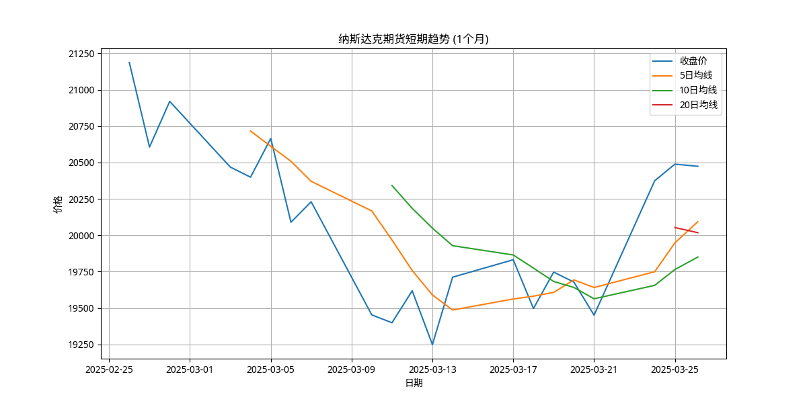
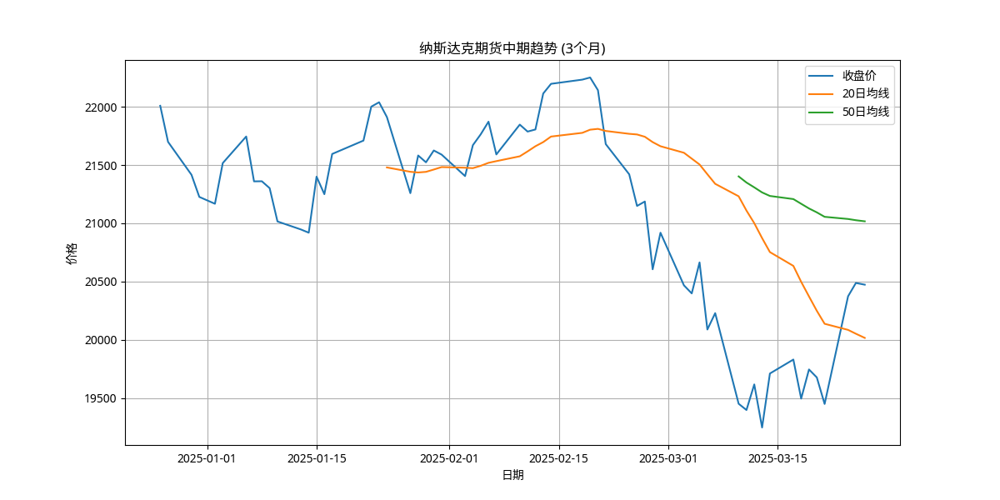
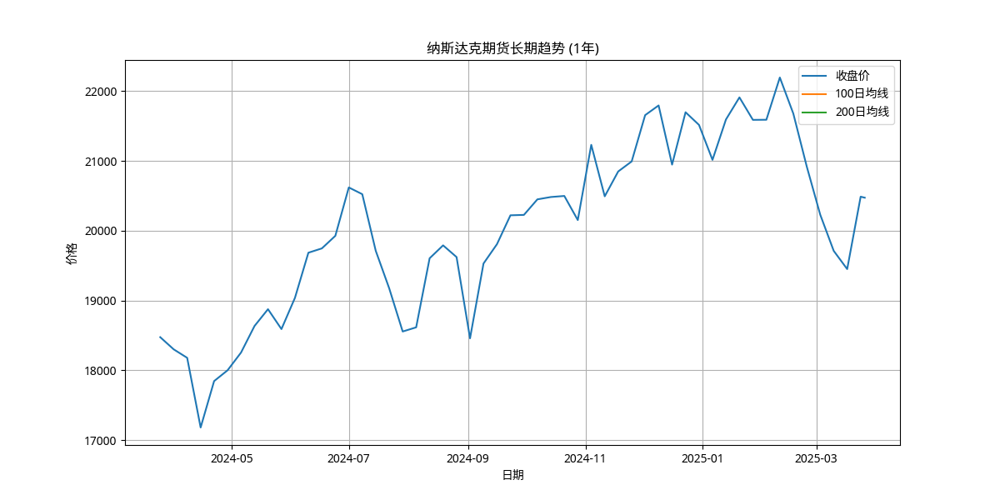
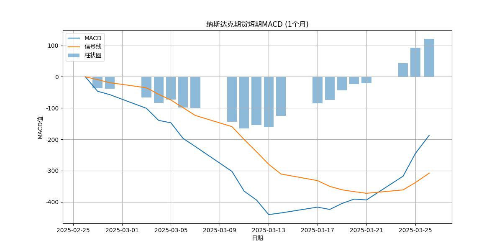

执行摘要
本报告对纳斯达克期货进行了全面分析，包括市场趋势、技术指标、基本面因素和潜在风险，并基于分析结果提供了针对不同风险偏好投资者的交易建议。
截至2025年3月26日，纳斯达克期货(NQ=F)的最新收盘价为20473.75点。短期趋势呈上升态势，中长期趋势仍有一定压力。技术指标显示，短期信号偏向看涨，中长期信号偏向中性。基于综合分析，我们建议短期投资者可关注反弹机会，中长期投资者则应更加谨慎，等待更明确的趋势信号。
关键技术图表

短期趋势分析

中期趋势分析

长期趋势分析

MACD技术指标分析